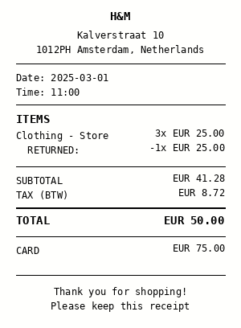

As a user who bought 3 items at a shop but returned 1 defective item on the same receipt I want enter both `net_bought_items` and `net_returned_items` so that only the net amount (bought minus returned) is matched to my bank statement.
↑↓ arrows or j/k to jump between DAG nodes · click a node to seek · space to play/pause
DAG Diagram
Current layer: —